Capstone project for the Game Level Design course at Sheridan College, where I fulfilled the roles of Game Designer, Level Designer and Project Manager.
A two-character puzzle game played on a single controller, we had 4 months to complete the project.
DUO utilized a character controller that moved both of the characters, with each using one of the dual sticks. Each had unique features that required them to work together in order to progress. The human character (Yukka) could climb, push and pull objects, and interact with environmental elements. TR34D, the robot, could enter small areas, traverse regions lethal to Yukka, interface with machines, and burn hostile flora and ice blocks with a flamethrower. Additionally, each character could interface with switches that matched their color-coding (Yellow and Red, respectively.)
Levels required interactive elements, multiple routes to ensure that each playable character was able to reach the exit, and reliable means to teach, test and challenge players. We split teaching these gameplay elements across 6 stages, and completed a vertical slice with plenty of time to spare before the deadline.
Level 1 introduced players to Yukka through narrative, and then taught and reinforced the Push and Burn mechanics. I created a bleak, desperate feel through dense snow particles, dense fog, snow shaders to deform terrain underfoot, and harsh arctic sound effects.
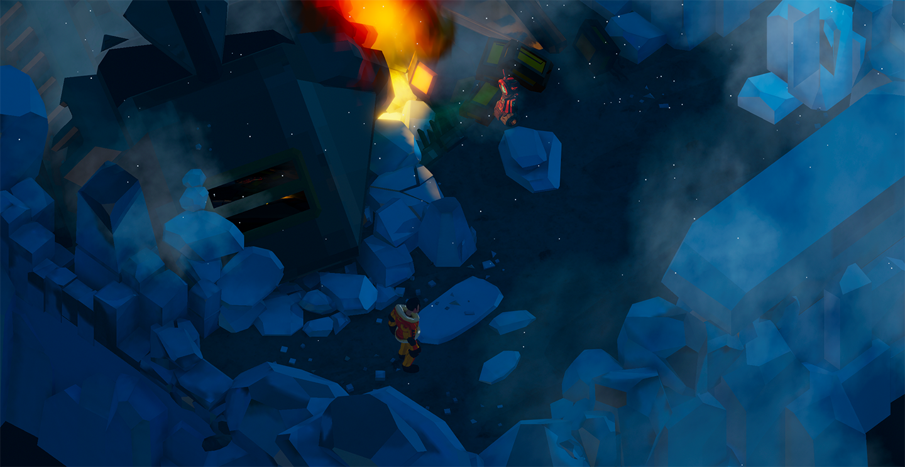
Players begann with Yukka at the ruins of her spacecraft. They learned the Push mechanic, and pushed a block to access the second character.
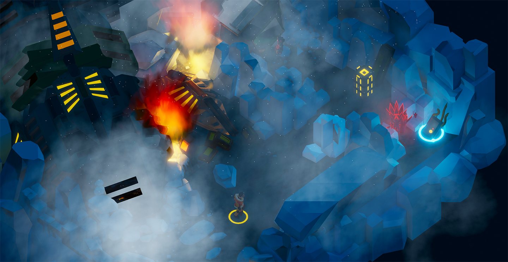
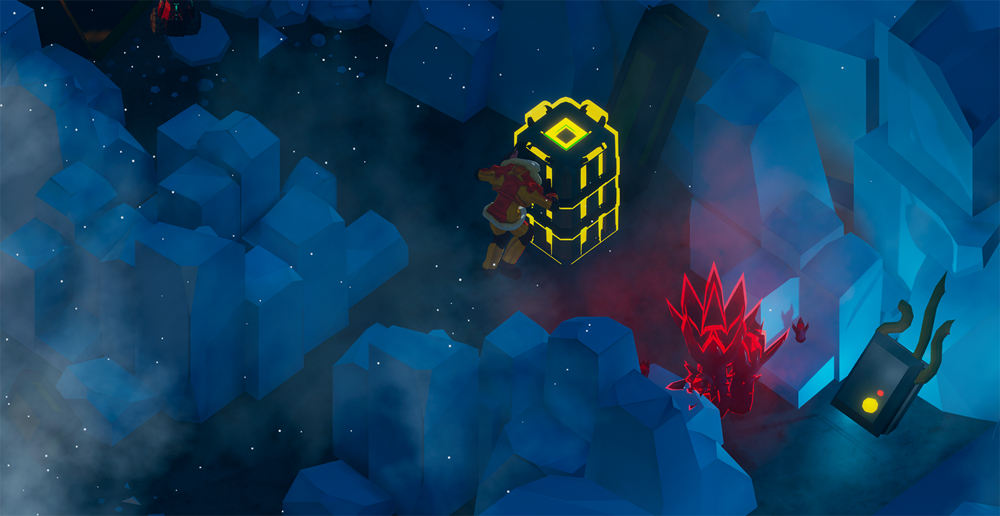
(left) A birds-eye view of level 1. (right) A player pushes a crate to gain access to TR34D.
In the second stage, players learned that TR34D could enter areas Yukka cannot and traverse deadly freezing cold water. Players were also introduced to color-coded switches and the climbing mechanic for Yukka. By guiding TR34D along the frozen river, and burn a plant to allow Yukka to trigger a switch. This lowered a section of the level for TR34D to access additional elements, eventually leading to the exit.
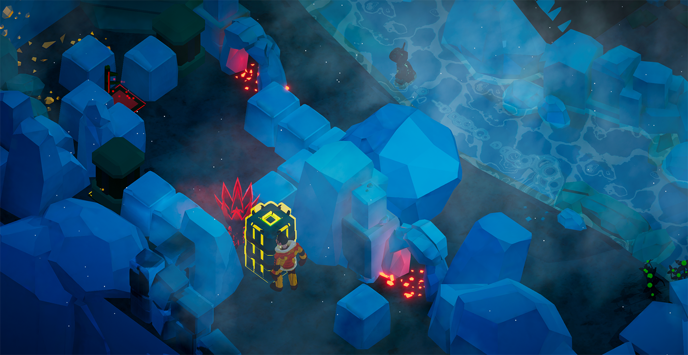
TR34D traverses a frozen river to reach Yukka and burn a plant to cinders.
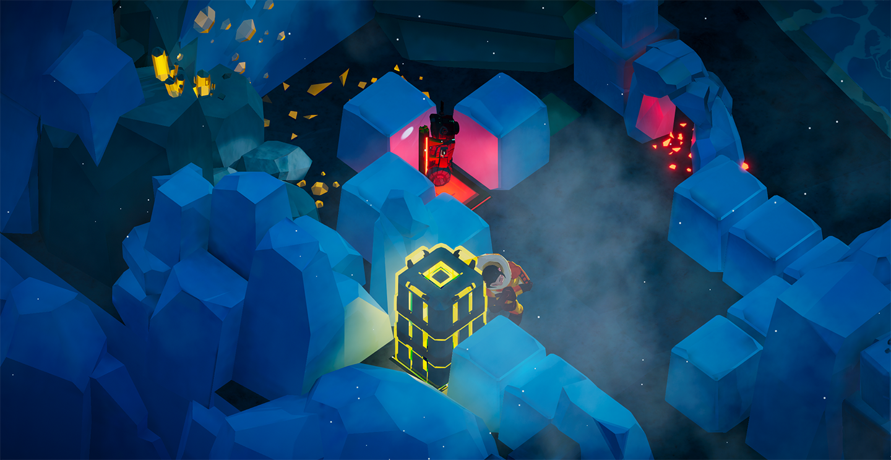
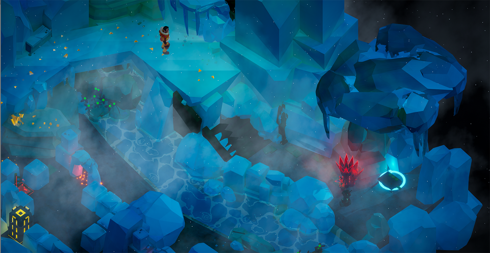
(left) Freed, Yukka pushes a block onto a switch. (right) Yukka, having accessed the upper tier of the level via climbing, waits for TR34D to burn a plant at the opposite side of the river.
Next, players learned that Yukka can knock objects over and create paths that were previously not available, and introduced players to additional gameplay mechanics - moving platforms and timed switches.
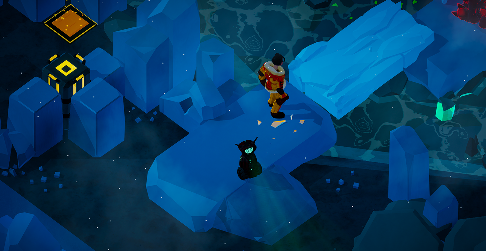
Here, Yukka has kicked over large ice blocks to provide TR34D access.
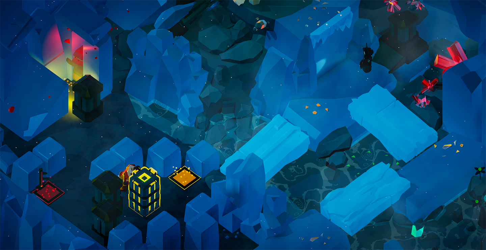
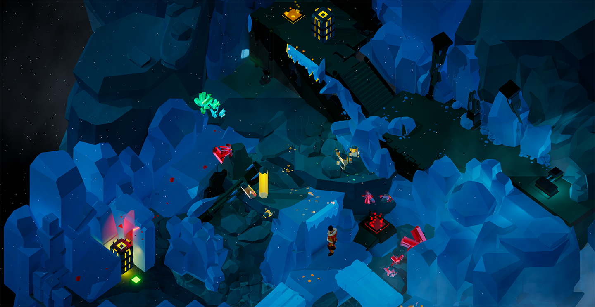
(left) Yukka moves a yellow crate to a yellow switch in order to lower terrain for Tr34D to traverse. (right) Revealing the northern half of the level introduced alien ruins, leading to further narrative revelations, and introduced players to moving platforms.
In the fourth level, players were introduced to the games big threat - alien machines intent on killing them. Now, players would need to use the two characters to complete puzzle elements to open and reach the exit, all while avoiding the deadly new enemy and its patrol path. It responded only to objects it could see, and players could block that vision with objects.
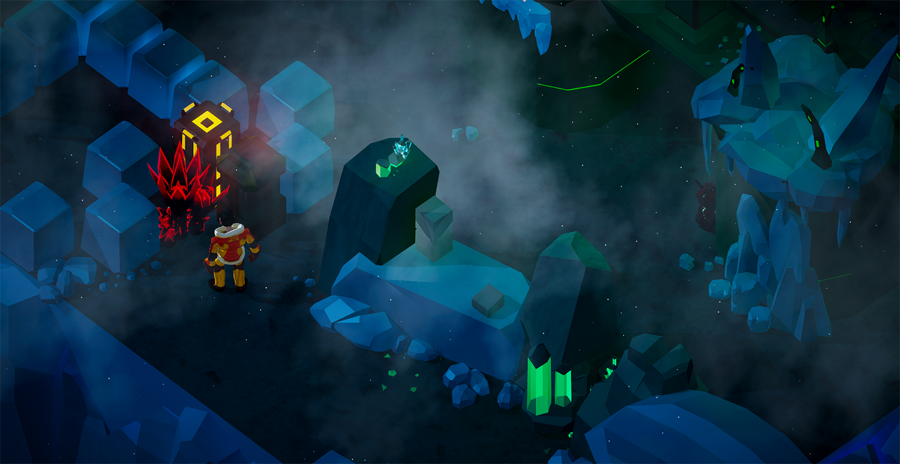
The bleak alien landscape began to change in level 4, which was further complicated when they opened the door and freed the enemy robot.
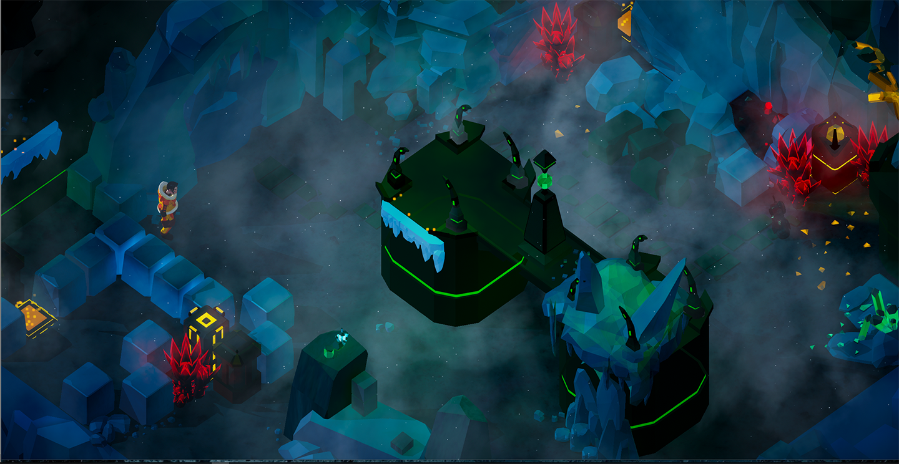
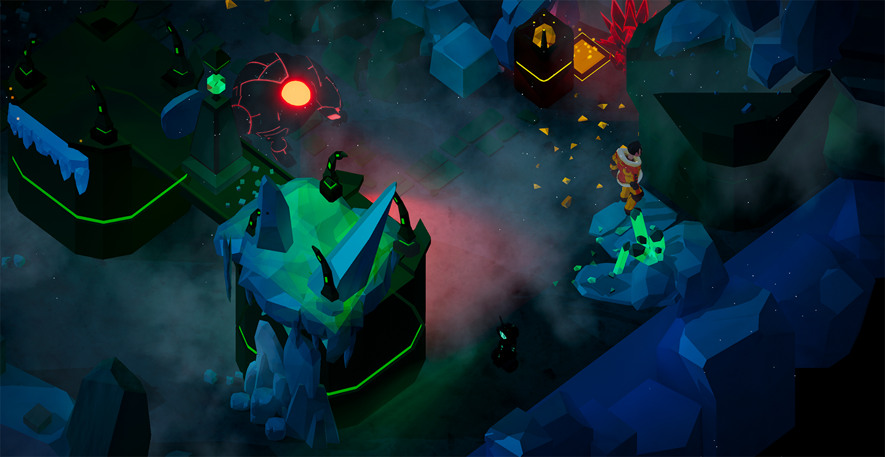
(left) An aerial view of the arena, with puzzle elements in all areas. Players could avoid the enemy on the vertical section. (right) The enemy robot on patrol, its red glare about to find the player.
Now within alien territory, Yukka and TR3AD had to contend with additional elements. Directional switches opened areas in one particular direction, and TR3AD gained access to alien computers, allowing him to activate or deactivate their technology.
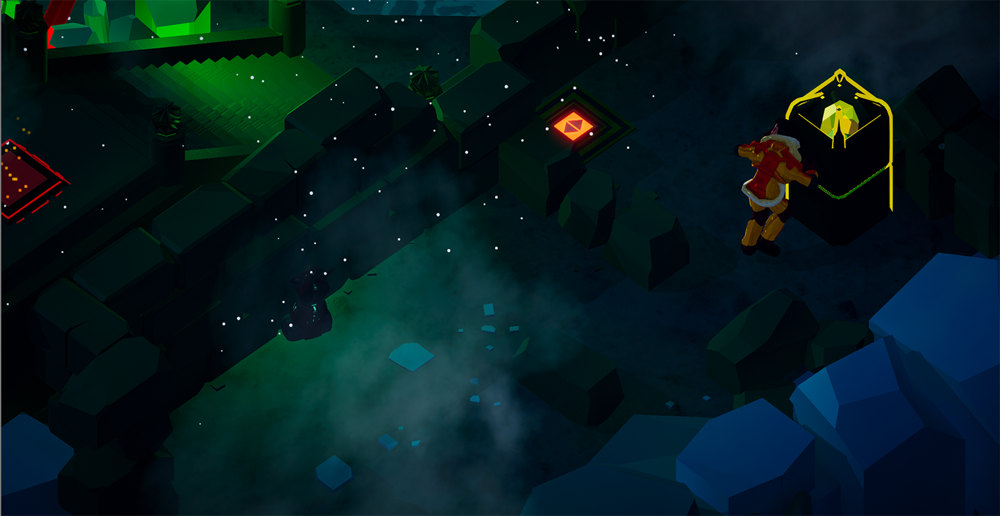
Yukka reveals a directional switch, leading her into the alien temple upon figuring out the puzzle.
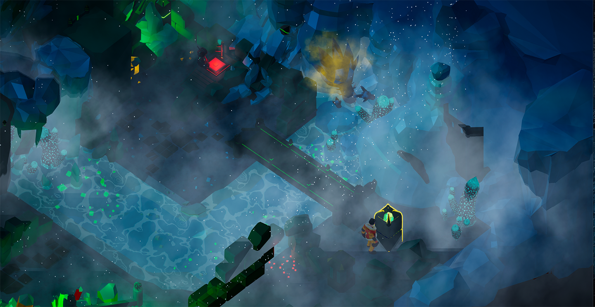
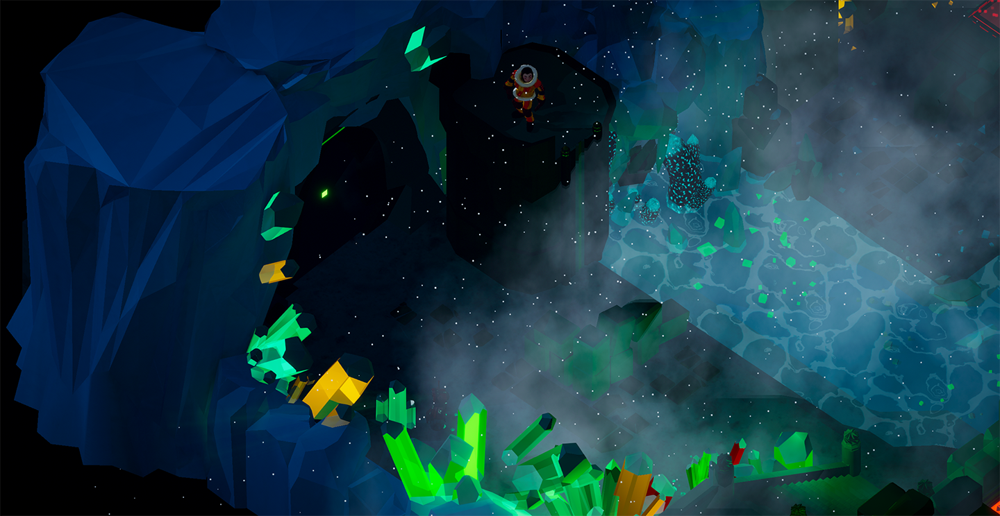
(left) Tread has accessed alien tech, and then activated a switch to raise a bridge, allowing Yukka to cross with her crate. (right) The temple door opens while Yukka awaits TR34D.
Now within alien territory, Yukka and TR3AD had to contend with additional elements. Directional switches opened areas in one particular direction, and TR3AD gained access to alien computers, allowing him to activate or deactivate their technology.
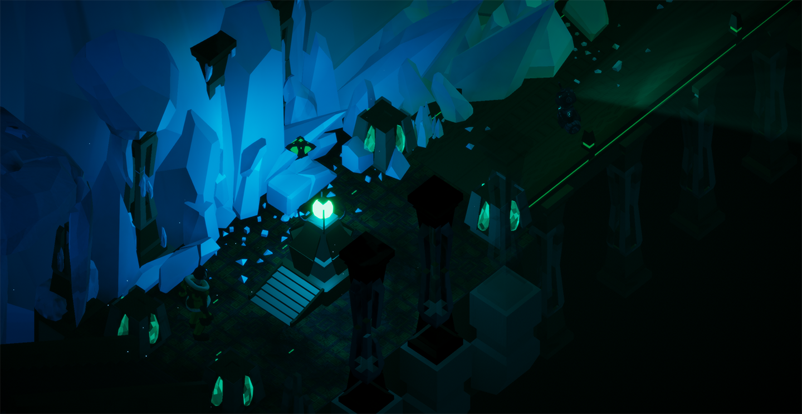
A birds-eye view of the first half of this level.
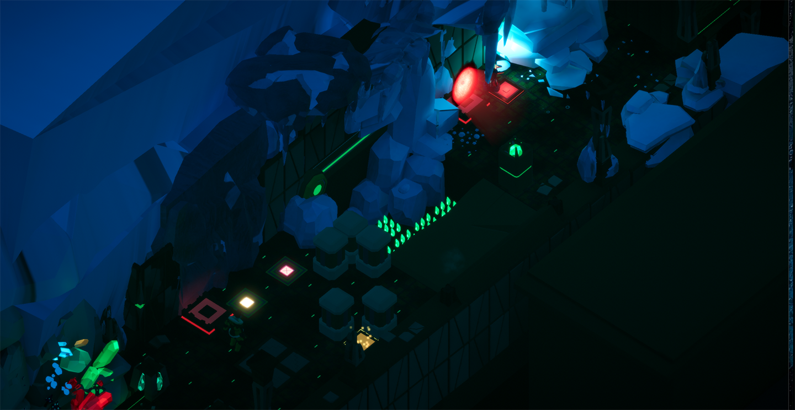
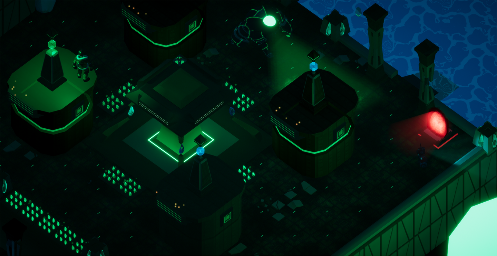
(left) Tread discovers he can use alien portals to teleport to new areas and reveals a gauntlet of puzzles. (right) The final puzzle section of the vertical slice, using all introduced mechanics.